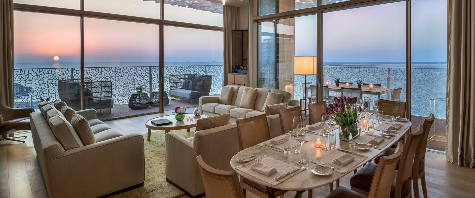
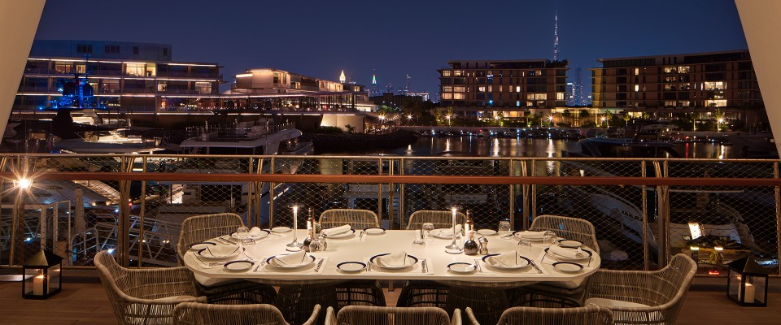

Property Guide
Bulgari Resort Dubai is the one I would use when a client wants Dubai to feel private, marina-led, and genuinely design-forward instead of loud.
This is a very different conversation from the Palm hotels. Bulgari Resort Dubai sits on Jumeira Bay, on its own seahorse-shaped island, and the whole place feels calmer, more residential, and more yacht-club than spectacle. If Atlantis The Royal is about scale and statement, Bulgari is about privacy, design, and the sort of client who wants Dubai but does not need it screaming at them the whole time.
What makes it unique
Bulgari gives you Dubai with a private-island marina mood instead of trying to out-shout the city.
That is why this hotel works so well for a certain client. It feels tailored, controlled, and genuinely design-led. Between the yacht club, the marina, and the villa-led privacy, it gives Dubai a quieter and more refined personality than most Palm-driven stays ever will.
Stay
101 rooms and suites
Officially 101 rooms and suites, plus 20 villas and a small mansion-style top tier.
Dining
Elegant, low-noise dining
Italian, Japanese, beach, lounge, marina, and pastry concepts that fit the Bulgari mood well.
Best For
Private island Dubai
Great for couples, yacht-minded clients, lower-key families, and design-driven luxury travelers.
Known For
Marina, yacht club, villas
The marina and villa-style privacy are what make this resort feel different from most of Dubai.



The overall setup
Officially, Bulgari Resort Dubai has 101 rooms and suites, 20 villas, 15 private mansions, and seven ocean mansions, plus its own 46-boat harbour and yacht club. That lineup matters because it tells you exactly what the property is trying to be: less city hotel, less giant resort, more private island retreat with a marina culture attached to it.
Jumeira Bay also changes the emotional feel of the stay. You are still in Dubai, but it feels more tucked away and cleaner in its mood than the denser resort corridors of the Palm.
Rooms, villas, and the kind of stay this supports
The standard rooms and suites already feel polished and calm, but the resort becomes especially strong once you move into the villa and mansion conversation. That is where Bulgari starts to feel almost like a private residence experience. Villas come with their own pools and gardens, while the mansion-tier inventory is for clients who want more separation, more privacy, and more hosting potential.
This is also why I like it for certain families. Not every family wants a loud Dubai resort with ten activities happening at once. Some want water access, privacy, quiet luxury, and enough room to spread out beautifully. Bulgari does that well.

Restaurants and the yacht-club atmosphere
The food and beverage setup fits the property. Officially, you are working with Il Ristorante - Niko Romito, The Bvlgari Bar, Hōseki, The Bvlgari Lounge, La Spiaggia, Il Caffè, Bvlgari Dolci, and the Yacht Club Restaurant. The nice part is that the lineup makes sense with the setting. It feels elegant and grown-up rather than trying to be a checklist of famous names.
The marina and yacht club are a real reason to use the property. Even if a client is not arriving by yacht, that whole environment gives the resort a Riviera feel that very few Dubai hotels can fake.
What people actually do here
This is not the hotel I would choose because I want someone running from waterpark to pool party. It is the hotel I would choose for a slower, cleaner rhythm: beach club lunches, spa time, marina dinners, maybe a boat afternoon, and a villa or suite that people genuinely enjoy returning to.
The Bvlgari Spa, the marina, the beach, and the yacht-club side of the property are the center of gravity here, and that gives the whole stay a different pace from the more maximalist side of Dubai.
Who I would book it for
- Couples who want a more private and design-led Dubai stay
- Families who value space and calm over resort spectacle
- Yacht-minded clients who love a marina atmosphere
- Dubai travelers who want a strong sense of place without the Palm energy
My honest take
Bulgari Resort Dubai is not trying to be everybody's favorite. That is part of the appeal. For the right client, it is one of the best stays in Dubai because it feels private, intentional, and genuinely stylish in a way that does not depend on sheer scale.